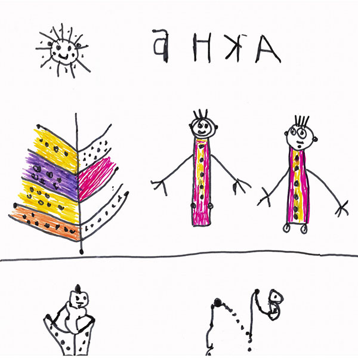
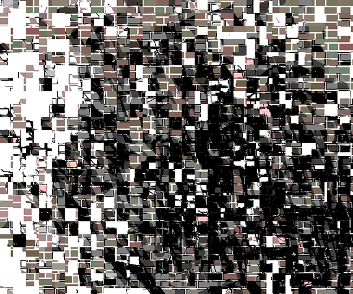

Online Gallery "Your Life Picture Gallery" is a project of the nonprofit organization "Your Life Picture". It provides a modern exhibition venue for various initiatives including the works of artists representing the style of outsider art, art brut or raw art. The major goal of the gallery is to collect and exhibit outsider, brut and contemporary art. It provides an open space to showcase and promote the work of unique artists. Currently, outsider contemporary art presents an extraordinary aesthetic phenomenon. It is a symbol of everything that is spontaneous and independent. This form of art represents the meaning of existence that is free from stereotypes. It's essence embodies non-conforming picture of life. You can follow the link below to get to our gallery by pressing "ENTER". You can navigate the site by using ← ↑ ↓ → buttons. To view all pictures use ☰.
"No title"
This exhibition opens our online gallery. Current collection includes paintings and drawings by the people who still live at the psychiatric and neurological nursing home. They draw on the pages torn out of notebooks, on pieces of postal paper, on the scraps of tracing paper - on any piece of paper they can find. They use pencils of any color, ball pens, paints, ink or their fingers.
Their work always leaves in awe and once again demonstrates that a true artist does not need an "ivory tower" to create. Also, it shows that these people do not need fancy artistic supplies or special atmosphere to create their art.
Artists

Evgenii Fedishin

Alexey Mishinev

Andrey Vasiliev

Aleksandr Lednev

Kamil Yapparov

Aleksandr Lednev

Alexey Slashchev

Gennady Zavyalov

Kamil Yapparov

Aleksandr Lednev
"Mixed Media Art"
Throughout the history of fine arts, mixed media art, which combines or mixes multiple styles and techniques, has always been very popular. In our time, mixed media art is a synonym of experiment; it is a way to search for new meanings and technology. It is a synonym of freedom.
Mixed media is used by artists who represent contemporary art, brut art, multi media и digital art. It is also widely used in design and photography. Philosophy of mixed media based on promoting creative freedom is also a philosophy of conscious choice.
As it was noted by one of the representatives of outsider art Joseph Sevenson, " People are fragile. Make a conscious choice to serve as your vision and empathy".
Our exhibition is the result of collaboration of different artists who use a variety of techniques. However, they have one thing in common - they all work with great bravery, awareness and inspiration. Aleksei Sakhnov, Albert Kotov, Julia Savinova, Cyrill Shmyrkov, Igor Korolevskij, Mikhail Gordeichuk, and Konstantin Salamatin are residents of the computer studio founded by the public charity organization "Perspectives" (St.Petersburg). Computer class was created in 2011 and represents one of the projects of the humanitarian program run by "Perspectives"at the psycho-neurological nursing home #3. Collection of digital art ofthat class has over fifteen hundred pieces of art. This project is curated by Roman Mazhorov.
Svetlana Konegen is an artist, culturologist, literary critic, a writer and in the past a well known television presenter. She worked at the "Independent Newspaper" and newspaper "Kommersant". Svetlana Konegen is also known as a successful contemporary artist who is highly skilled in painting, digital art, glitch art and photography. Her works are part of the collections of the Russian Museum, numerous art galleries and private collections in Russia, Italy, England and Germany.
Their work always leaves in awe and once again demonstrates that a true artist does not need an "ivory tower" to create. Also, it shows that these people do not need fancy artistic supplies or special atmosphere to create their art.